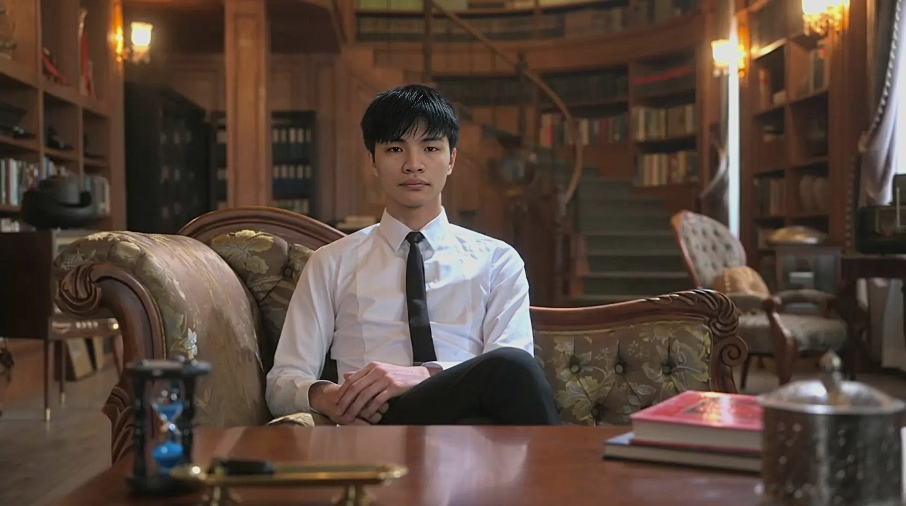

Free Tier
Quiet Beginnings
A weekly audio piece from the public domain — hand-picked for the curious mind. No card required, no catch. Just a taste of what depth sounds like.
Start Listening Free →You read less than you'd like. You think more than most.
A daily dose of philosophy and art — spoken, and made for the life you're actually living.
Offerings
Free Tier
A weekly audio piece from the public domain — hand-picked for the curious mind. No card required, no catch. Just a taste of what depth sounds like.
Start Listening Free →Main Subscription
$12
every 4 weeks
Each piece is 2–4 minutes.
No fluff. No hype. No daily spam.
You have full control to Cancel anytime.
SubscribeOne-Time
$47
You fill out a short form. You tell us something real — a chapter of your life, a question you keep returning to, a version of yourself you're working toward. You choose a book you've always wanted to understand.
We build it into an original audiobook written around you.
One piece. Made for one person. Yours to keep.
Request Yours →Become a monthly member on Patreon or send a one-time contribution via Ko-fi.
Membership hosted securely on Patreon
Listen In
A sample piece from our collection. No signup. Just listen.
Featured Reflection
0:00 / 0:00
"I never felt so home in a book"
Private Member
"गीता का वो हिस्सा सुनकर आँखें भर आईं। शुक्रिया, सच में।"
Arjun, Mumbai (Bespoke Audio Client)
"I closed my eyes halfway through and didn't open them until it was over."
Founding Listener
Explore
Anti-capitalist exception
Most Daily Art Cult audiobooks sit behind paid access. Marx opens differently: a free library for the thinker who made capital itself the question.
All other power and society selections remain part of the paid collection.
 Free
Open Library
Capital
Karl Marx — Free Library
Free
Open Library
Capital
Karl Marx — Free Library

Trust & Story
For over a decade, I've been creating spaces where people feel something real — no algorithms, no trends. The Daily Art Cult is that same spirit, just quieter.
Every piece is chosen slowly and personally — one person sitting with ideas, asking whether it's worth your two minutes. I think it is.
The Experiment
Inspired by Ernest Becker's work, we explore how we can live on through the values and wisdom we leave behind.
Members can input situations and receive responses in their loved one's voice, shaped by personal messages, remembered principles, and the particular phrases that made that person feel unmistakably present.
Learn More About The Immortality Project